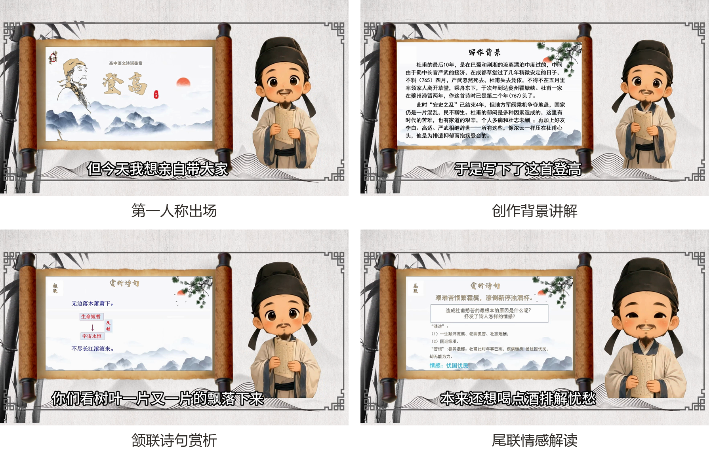

内容对象
以唐代诗人杜甫的《登高》为首个内容单元，面向诗词学习与经典文化传播场景。
THE WORK / 作品展示
让小杜甫带领观众走近诗歌的创作背景、语言意象与情感脉络。
SELECTED FRAMES / 视频画面
以下为已完成视频中的实际画面，展示角色、诗词内容与讲解氛围。

ABOUT THE LESSON / 作品说明
以唐代诗人杜甫的《登高》为首个内容单元，面向诗词学习与经典文化传播场景。
人物出场、创作背景、全诗朗读、逐联赏析与情感归纳，形成连贯的观看体验。
已完成视频约 5 分 07 秒，1920×1080 画面，配有数字人口播、同步字幕和讲解画面。
当前成果为视频微课及相关制作材料；真实课堂试用、学习效果和机构合作仍待后续验证。